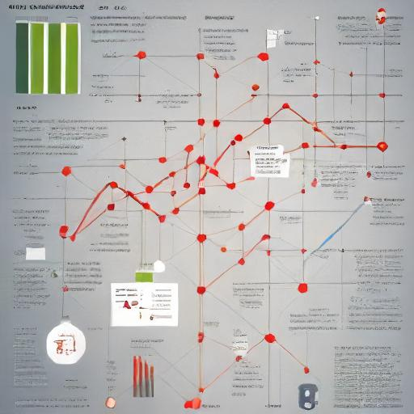
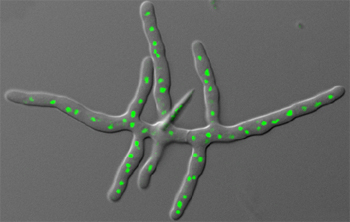

My Interests

Data Analytics
I have a strong interest in data analytics. I enjoy working with data to uncover patterns, insights, and trends that can inform decision-making and drive improvements. My goal is to leverage data analytics to solve complex problems and contribute to impactful projects.

Using Coding to Facilitate Scientific Research
Combining my background in science with my coding skills, I am passionate about using technology to advance scientific research. I believe that coding can streamline data analysis, automate repetitive tasks, and enhance the accuracy and efficiency of research projects.